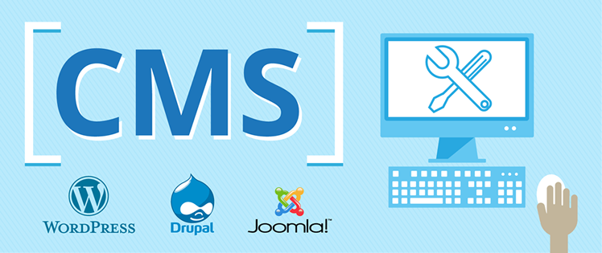

İçerik Yönetim Sistemleri, web sitelerinin oluşturulması ve güncellenmesi için tasarlanmış web tabanlı uygulamalardır. İşlevselliklerini artırmak ve web sitesinin yönetimini kolaylaştırmak için temalar ve eklentiler de olabilmektedir. Halihazırda birçok içerik yönetim sistemi mevcut ve bunların her birinin güçlü ve avantajlı yönleri bulunuyor. İsterseniz hemen göz atmaya başlayalım.
İçerik Yönetim Sistemleri ile ilgili geniş bilgilere yukarıdaki linklere tıklayarak resmi sitelerinden geniş bilgi alabilir yada aşağıda vermiş olduğumuz kısa açıklamaları inceleyebilirsiniz...
WordPress içerik yönetim sistemlerinin en güçlü olanlarındandır. Kullanımı kolay ve tasarımları göz alıcı olan bu sistem ilk olarak bir bloglama platformu olarak tasarlanmıştır. Ancak, yavaş yavaş bazı hileler ve eklentilerin de yardımı ile güçlü bir CMS’e dönüşebilir. Bu özelleştirme için gerek kodlama yapısı gerekse eklentilerin kullanımını iyi bilmek, olmazsa olmaz bir ihtiyaçtır. Dünya üzerindeki internet sayfalarının yaklaşık olarak %30`na yakını bu altyapıyı kullanmaktadır. Ünlü birçok marka ve kişi de web sayfalarını bu altyapıya emanet etmiştir. Alanında birinciliği olan WordPress’in en büyük iki rakibi Drupal ve Joomla’dır. Ücretli ve ücretsiz tema ve pluginleri ciddi bir pazar yaratmıştır.